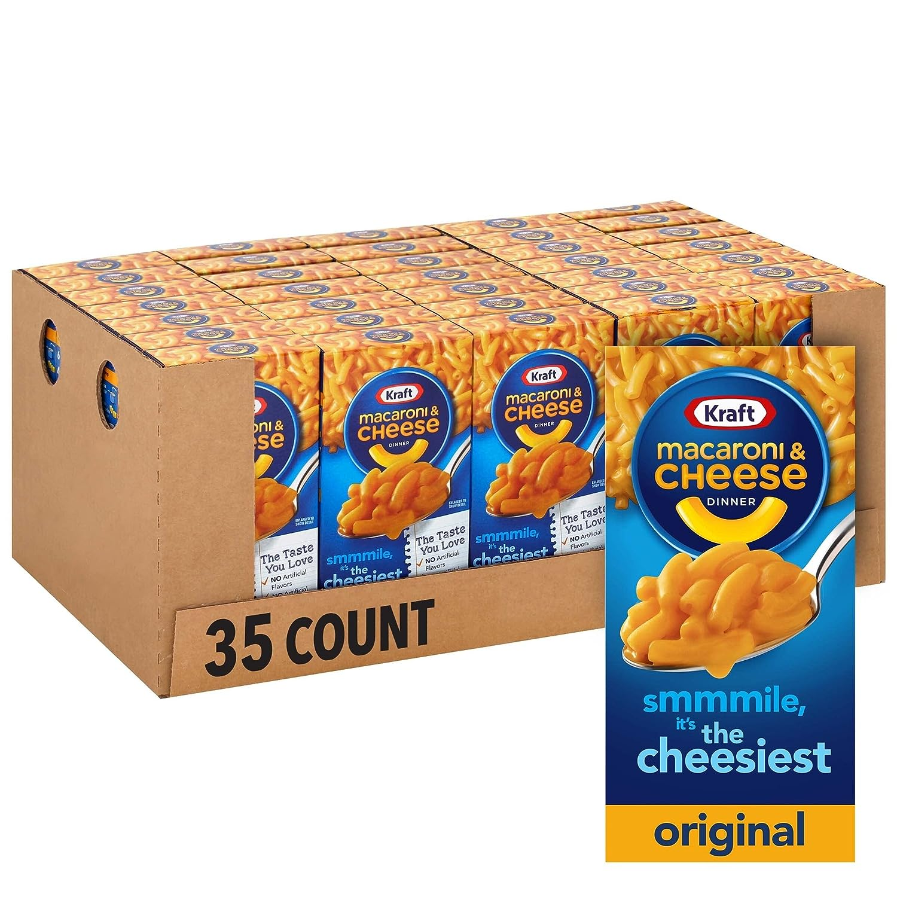

Mac's Famous Mac and Cheese

Description
The best mac and cheese in the suburbs.
Ingredients
- 1 box Kraft Mac & Cheese
- 1 powdered cheese packet (from the Kraft Mac & Cheese box)
- 1.5L of water
- 50g of butter
- 60ml of milk
- dog
Steps
- Bring large pot of water to a boil.
- Add noodles and cook until tender.
- Drain noodles, set aside.
- Return pot to burner over medium low heat, add butter.
- Add meat hunks, saute for approx. 4-5 minutes.
- Add milk, cheese packet, noodles, and stir.
- Serve immediately or store for 3-5 days.
Home